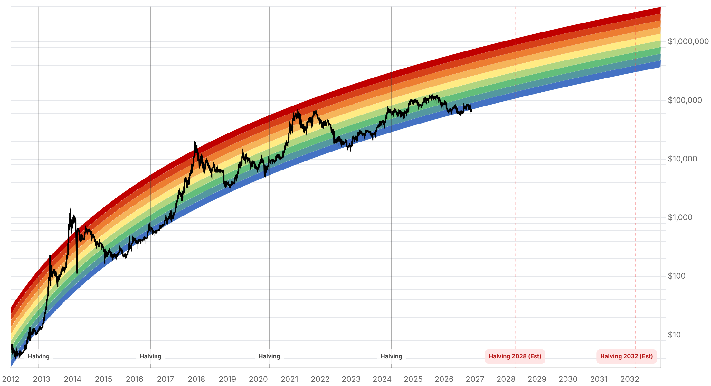

Reporte financiero
BTC cotiza en vivo a USD 64.668,94 (07:20 UTC), -0,32% vs. el cierre previo de USD 64.875,81 -frente al precio en vivo de ayer (USD 64.550,22) el cambio es de +0,18%, cuarto día consecutivo sin un movimiento brusco-. El Fear & Greed Index se mantiene en 11 ('Extreme Fear', venía de 12 ayer). La novedad principal del día es que Nvidia reportó anoche (17-nov, después del cierre) sus resultados del tercer trimestre fiscal 2027, muy por encima de lo esperado: ingresos de USD 115.800M (+103% interanual, +20% trimestral) vs. un consenso de ~USD 108.700-109.100M; ingresos de centros de datos de USD 107.600M (+110% interanual) vs. ~USD 101.870M esperado; ganancia por acción GAAP de USD 2,70 y no-GAAP de USD 2,68 vs. ~USD 2,47-2,48 esperado; margen bruto de 74,8-74,9%; guía del cuarto trimestre de USD 130.000M +/-3% (vs. consenso de USD 125.100M), que excluye explícitamente ingresos de cómputo de centros de datos de China; la compañía además elevó su proyección de crecimiento para el año fiscal 2028 a 75% desde 70% previo. La acción subió +3-4% en after-hours tras un mes muy débil (-24% en lo que va de noviembre, mínimo desde julio de 2025 antes del reporte). En paralelo, la junta de Nvidia confirmó el mismo 17-nov que NO tiene intención de reinstalar a Jensen Huang como CEO -Huang dijo ese día que se sentiría 'honrado' de volver si se lo pidieran, citando un apoyo masivo de empleados, inversionistas, socios y clientes, pero la junta no cambió de postura-; la CFO Colette Kress continúa como CEO interina, y tres comités de la Cámara de Representantes de EE.UU. citaron a Huang a testificar en una entrevista a puerta cerrada el 1 de diciembre. Con la correlación de retornos diarios de 30 días entre BTC y el Nasdaq en 0,67, este catalizador es relevante para bitcoin, aunque el precio spot se mantuvo prácticamente plano tras el reporte -sin contagio inmediato fuerte en ninguna dirección-. Sobre ETFs de bitcoin: la racha de salidas netas que se extendía desde al menos el 10 de noviembre se rompió el lunes 16 con un flujo neto positivo de USD 8,0M -IBIT aportó +USD 76,5M, compensado por salidas en GBTC (-USD 34,6M), FBTC (-USD 11,3M) y fondos menores-; el dato de la sesión del martes 17 todavía no está disponible a esta hora. Sobre Strategy (MSTR): se confirmó una nueva compra de 485 BTC por USD 33,4M (precio promedio USD 68.887) según filing SEC del 16 de noviembre, financiada con venta ATM de 2,09M acciones MSTR (USD 244,7M recaudados, de los cuales USD 206,3M fueron a recompra de STRC) -esto resuelve el rumor no verificado mencionado en el reporte de ayer, que en realidad correspondía a una compra MENOR (no mayor) a la del 9 de noviembre-; las tenencias totales suben a 850.849 BTC. El filing llegó dos días antes de que MSCI publicara su lista de empresas afectadas por la nueva regla de concentración de activo único, por lo que el riesgo de exclusión de Strategy de índices MSCI sigue como tema abierto a monitorear. No hay novedades verificables sobre PPI/expectativa de la Fed (se mantiene el 89,7% de probabilidad de un recorte de 25pb el 9 de diciembre, dato del 13-nov) ni sobre la Clarity Act (sigue estancada en el Senado tras no alcanzar los 60 votos de cloture), BTCPay Server, la apelación del Reino Unido sobre los 61.000 BTC, Cantor Fitzgerald, ni el reclamo no verificado sobre Irán.
El precio en vivo de BTC-USD (Yahoo Finance, 07:20 UTC) es de USD 64.668,94, -0,32% vs. el cierre previo de USD 64.875,81 (rango del día: USD 64.139,69 a USD 64.884,81). Frente al precio en vivo de ayer (USD 64.550,22), el cambio es de +0,18% -cuarta sesión seguida sin un movimiento brusco-. El Fear & Greed Index de alternative.me se mantiene en 11 hoy (venía de 12 ayer), sin salir de la categoría 'Extreme Fear' que acumula ya varias semanas.
Nvidia reportó anoche (17-nov, después del cierre) ingresos de USD 115.800M (+103% interanual, +20% trimestral) vs. un consenso de ~USD 108.700-109.100M, con ingresos de centros de datos de USD 107.600M (+110% interanual) muy por encima de los ~USD 101.870M esperados. La ganancia por acción fue de USD 2,70 (GAAP) / USD 2,68 (no-GAAP) vs. ~USD 2,47-2,48 esperado, con margen bruto de 74,8-74,9%. La guía del cuarto trimestre es de USD 130.000M +/-3% (vs. USD 125.100M de consenso), excluyendo explícitamente ingresos de cómputo de centros de datos de China; la compañía elevó su proyección de crecimiento para el año fiscal 2028 a 75% desde 70%. La acción subió +3-4% en operaciones after-hours, tras un mes muy débil (-24% en lo que va de noviembre, mínimo desde julio de 2025 antes del reporte). La CFO e interina CEO Colette Kress dijo que 'lo más importante que hemos visto es el crecimiento de la demanda que existe' y que la relación con los clientes 'sigue siendo' sólida, calificando la operación como 'negocio normal'. En paralelo, la junta de Nvidia confirmó el mismo 17-nov que no tiene intención de reinstalar a Jensen Huang como CEO -Huang dijo ese día que se sentiría 'honrado' de volver si se lo pidieran, citando apoyo de empleados, inversionistas, socios y clientes, pero sin cambio de postura de la junta-, y tres comités de la Cámara de Representantes lo citaron a testificar el 1 de diciembre. Analistas se mantienen cautelosos pese al batazo: Morgan Stanley recortó ~10% sus estimados de ventas de centros de datos para 2027-2028 y Mizuho bajó su precio objetivo a USD 220 desde USD 250, en parte por la exclusión de ingresos de China de la guía y por señalamientos de Culper Research sobre la exposición a ese mercado (que Nvidia niega). Con una correlación de retornos diarios de 30 días de 0,67 entre BTC y el Nasdaq, este catalizador es relevante para el apetito de riesgo cripto, aunque el precio de bitcoin se mantuvo prácticamente plano tras el reporte.
Según datos de tftc.io, el lunes 16 de noviembre los ETFs spot de bitcoin en EE.UU. registraron un flujo neto positivo de USD 8,0M -la primera sesión con entradas netas tras al menos cuatro sesiones consecutivas de salidas (10 al 13 de noviembre, por USD 95,0M, 299,9M, 284,0M y 185,5M respectivamente)-. IBIT lideró con +USD 76,5M, compensado por salidas en GBTC (-USD 34,6M), FBTC (-USD 11,3M) y montos menores en BTCO, BTC, ARKB, EZBC y MSBT. El dato de la sesión del martes 17 de noviembre todavía no está disponible a esta hora.
Un filing SEC fechado el 16 de noviembre confirma que Strategy compró 485 BTC por USD 33,4M (precio promedio USD 68.887) en la semana previa, financiado con una venta ATM de 2,09M acciones MSTR que recaudó USD 244,7M (USD 206,3M destinados a recompra de acciones preferentes STRC, USD 5M a caja). Esto lleva las tenencias totales a 850.849 BTC -resolviendo el rumor no verificado citado en el reporte de ayer sobre una compra 'mayor': la compra real confirmada fue más pequeña que la del 9 de noviembre (1.036 BTC), no más grande-. El filing llegó dos días antes de que MSCI publicara su lista de empresas afectadas por la nueva regla de concentración de activo único, por lo que el riesgo de que Strategy sea excluida de índices MSCI sigue abierto. La acción MSTR cayó 6,5% la semana pasada, cerrando el viernes en USD 111,62, su nivel más bajo desde junio.
No se encontró información nueva y confiable desde el reporte de ayer sobre la expectativa de la Fed (se mantiene el último dato verificado del 13-nov: PPI de octubre en +6,5% interanual y 89,7% de probabilidad de un alza -recorte- de 25pb el 9 de diciembre según CME FedWatch). La Clarity Act sigue estancada en el Senado -el intento más reciente de avanzarla no logró los 60 votos necesarios para cerrar el debate (cloture), con varios demócratas exigiendo salvaguardas de ética antes de respaldarla-. Tampoco hay novedad verificable sobre BTCPay Server, la apelación del Reino Unido sobre los 61.000 BTC, Cantor Fitzgerald, ni el reclamo no verificado sobre un ataque a un radar en Baréin mencionado en ediciones anteriores.
| Periodo | Valor |
|---|---|
| 12 nov | 71342.97 |
| 13 nov | 68249.27 |
| 14 nov | 64128.05 |
| 15 nov | 65305.06 |
| 16 nov | 64855.84 |
| 17 nov | 64893.95 |
| 18 nov (en vivo) | 64668.94 |
| Periodo | Valor |
|---|---|
| Hoy | 11 |

“Lo más importante que hemos visto es el crecimiento de la demanda que existe.”
“Recortamos nuestros estimados de ventas de centros de datos para los años calendario 2027 y 2028 en aproximadamente 10%, en parte por la exclusión de ingresos de cómputo de China de la guía de Nvidia.”
El precio sigue prácticamente estable frente a ayer (+0,18% en vivo) y el Fear & Greed Index apenas se movió (11 vs. 12), manteniendo la lectura de pausa de los últimos días. El catalizador de corto plazo más relevante fue el reporte de Nvidia de anoche -resultados muy por encima de lo esperado y guía sólida, pero sin contagio inmediato fuerte hacia bitcoin a pesar de la correlación de 0,67 con el Nasdaq-. La confirmación de la junta de Nvidia de que no reinstalará a Jensen Huang, junto con la citación de tres comités de la Cámara de Representantes para el 1 de diciembre, mantiene la incertidumbre de gobernanza corporativa como un factor de riesgo de sentimiento tecnológico a seguir, con posible contagio hacia bitcoin en cualquier dirección.
La racha de salidas de ETFs de bitcoin se rompió el lunes 16 de noviembre con un flujo neto positivo de apenas USD 8,0M -una señal débil de estabilización más que de reversión, a confirmar con los datos de los próximos días-. La expectativa de un recorte de tasas de la Fed en diciembre (89,7% según el último dato verificado del 13-nov) tampoco tiene actualización confiable hoy. Strategy confirmó una nueva compra de bitcoin (485 BTC), pero más pequeña que la de la semana anterior, y enfrenta el riesgo de exclusión de índices MSCI por la nueva regla de concentración de activo único -un tema a monitorear en las próximas semanas.
Sin cambios en los objetivos de precio de largo plazo ya reportados en ediciones anteriores (Citigroup, Bernstein, Standard Chartered, Tom Lee, NYDIG, Armstrong, piso de costo de producción de JPMorgan en USD 94.000). Con el precio spot actual en USD 64.668,94, BTC se mantiene muy por debajo de ese piso de costo de producción, en línea con la brecha ya señalada en ediciones anteriores.
Es la primera sesión positiva tras al menos cuatro días de salidas netas, pero la magnitud es pequeña frente a las salidas de la semana anterior (hasta -USD 299,9M en un solo día). Esperar más sesiones de datos antes de interpretarlo como un cambio de flujo institucional.
La confirmación de la junta de que no reinstalará a Jensen Huang, sumada a la citación de tres comités de la Cámara de Representantes para el 1 de diciembre, mantiene abierto un foco de incertidumbre que, dada la correlación de 0,67 entre BTC y el Nasdaq en el último mes, puede trasladarse al apetito de riesgo cripto.
El filing de compra del 16 de noviembre llegó dos días antes de que MSCI publicara su lista de empresas afectadas por la nueva regla de concentración de activo único. Una eventual exclusión de índices podría generar ventas forzadas de MSTR por parte de fondos pasivos, con posible presión indirecta sobre bitcoin dado el tamaño de las tenencias de la compañía.